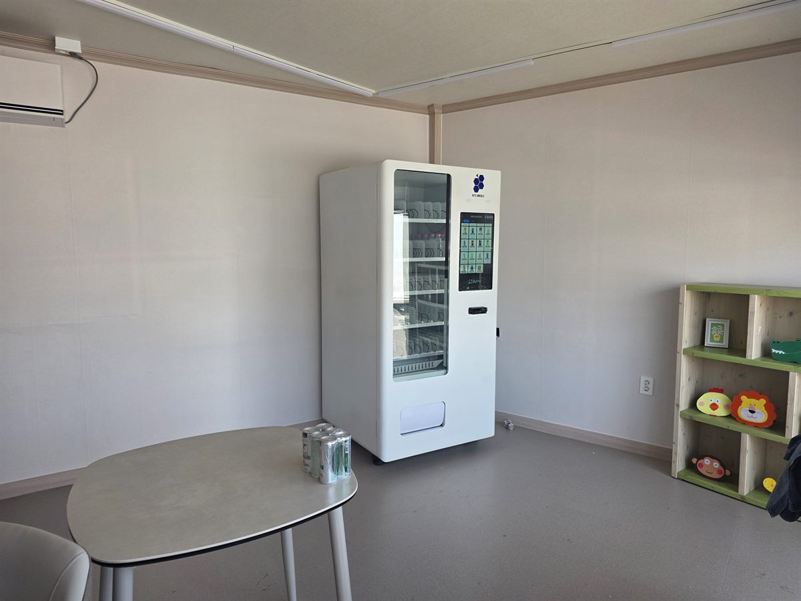

평택에서 아파트 커뮤니티실이나 키즈카페처럼 사람이 잠깐 머무는 공간에 자판기를 놓고 싶다는 문의가 많습니다. 매점을 차리자니 사람을 써야 하고, 아무것도 없으면 이용자들이 불편해합니다. 자판기 한 대가 그 사이를 메웁니다.
이런 자리는 크게 손댈 게 없습니다. 저희가 현장에서 먼저 보는 건 전원 콘센트 위치, 바닥 수평, 사람이 지나는 동선 세 가지입니다. 셋만 맞으면 반입과 세팅, 카드 결제 테스트까지 반나절이면 끝납니다.
커뮤니티실에 맞는 자판기 구성
스마트 자판기 한 대면 충분합니다. 냉장 칸에는 생수와 이온음료, 탄산음료를 넣고 위쪽 슬롯에는 과자와 초콜릿, 젤리처럼 가볍게 집어 갈 수 있는 품목을 채웁니다. 아이들이 많은 공간이면 저가 스낵 비중을 높이고, 어른 위주 공간이면 커피와 생수를 늘립니다.
화면에서 상품을 고르고 결제하는 방식이라 조작이 간단합니다. 신용카드와 삼성페이·카카오페이·네이버페이, QR 결제까지 모두 받습니다. 현금함을 넣지 않는 게 요즘 기본입니다. 동전을 채우거나 밤에 현금이 쌓여 불안할 일이 없습니다.
매출과 재고는 사장님 휴대폰 앱에서 봅니다. 어느 슬롯이 비었는지 원격으로 보이니 채우러 가는 날을 미리 정해두시면 됩니다.
이런 자리에 자판기를 놓을 때, 좋은 점과 어려운 점
좋은 점은 공간을 거의 안 쓴다는 것입니다. 자판기 한 대가 차지하는 자리는 한 평이 안 됩니다. 이미 임대료가 나가고 있는 공간이라면 그 한 칸에서 나오는 매출은 거의 마진으로 붙습니다. 인건비도 들지 않고, 이용자 만족도까지 올라갑니다.
어려운 점도 말씀드립니다. 이런 자리는 유동 인구가 정해져 있습니다. 커뮤니티실이나 키즈카페는 오는 사람 수가 대략 고정이라, 매출이 폭발적으로 늘지는 않습니다. 대신 예측이 되니 재고 계획을 세우기는 쉽습니다.
그리고 이용 시간대가 몰립니다. 주말 오후나 방학 기간에 회전이 집중되니 그 앞에 재고를 채워두는 게 중요합니다. 비어 있으면 그 주 매출이 통째로 날아갑니다.
평택에서 자판기가 잘 맞는 자리
평택은 자판기를 놓을 자리가 많은 편입니다. 고덕신도시와 브레인시티는 입주가 이어지면서 아파트 단지 커뮤니티실과 상가가 계속 생깁니다. 삼성전자 평택캠퍼스 주변은 교대 근무자가 많아 밤낮 구분 없이 사람이 움직입니다.
그 밖에도 평택역과 지제역 주변 오피스, 안중읍과 청북읍의 산업단지 배후 원룸촌, 평택대학교와 국제대학교 같은 학교, 병원 대기실과 헬스장, 스터디카페에서 문의가 꾸준합니다.
공통점은 사람이 머무는 시간이 있는 곳이라는 점입니다. 그냥 지나가기만 하는 자리보다, 잠깐이라도 기다리거나 쉬는 자리가 자판기와 훨씬 잘 맞습니다.
평택 서비스 지역
비전동 · 합정동 · 동삭동 · 세교동 · 지제동 · 소사벌 · 서정동 · 신장동 · 송탄 · 고덕신도시 · 브레인시티
안중읍 · 포승읍 · 청북읍 · 팽성읍 · 오성면 · 진위면 · 서탄면
인접한 오산 · 안성 · 천안 · 아산 · 화성 향남까지 같은 조건으로 나갑니다.
평택 무인자판기, 이렇게 시작하시면 됩니다
설치비는 받지 않습니다. 자리 보는 것부터 품목 구성, 기계 반입, 카드 결제 연동, 재고 운영 방법까지 한 번에 잡아 드립니다. 처음 놓으시는 분들은 잘 나가는 대여섯 품목만 좁게 시작해서 2~3주 회전을 본 뒤 넓히시는 게 안전합니다.
비용은 구입이 렌탈보다 유리한 편입니다. 렌탈료 대비 구입가가 낮아서 1년 남짓만 운영하셔도 구입 쪽이 넘어섭니다. 정확한 비교는 구입 vs 렌탈 비교 가이드에서 구성별 36개월 총비용을 보실 수 있습니다.
평택 무인자판기 설치 상담
자리 사진 한 장만 보내 주셔도 됩니다. 그 자리에서 돌아갈지, 어떤 구성이 맞을지 먼저 봐 드리고 견적을 보내 드립니다.
※ 사진은 픽포스가 시공한 설치 사례이며, 글에 적힌 지역의 현장 사진은 아닙니다. 자판기 구성과 품목은 자리와 업종에 따라 달라지며, 정확한 금액은 견적서로 안내드립니다.